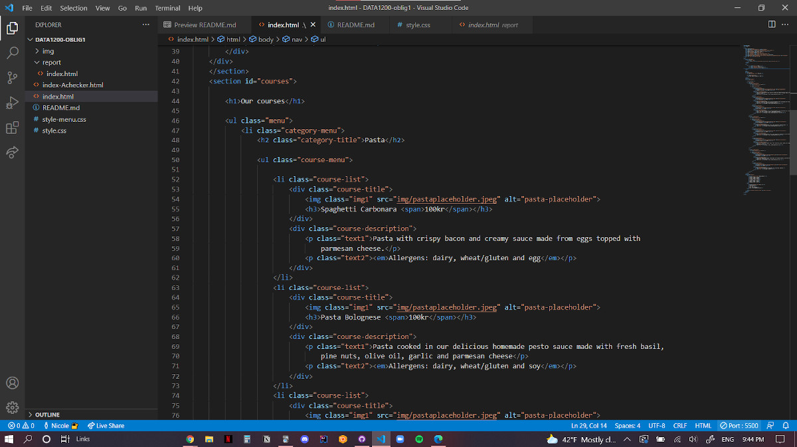
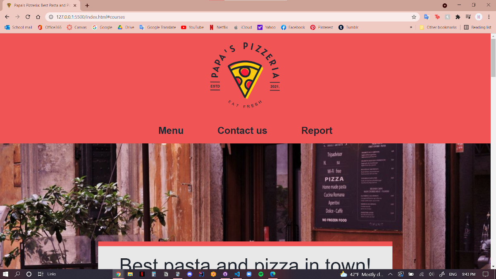

Reflection Essay
Upper-secondary school to university
The transition from upper-secondary school to university is a pretty big one. Having studied at IB, I was used to a pretty heavy workload and a fast teaching pace. However, what I did not expect was the amount of freedom we get in college. I did not anticipate the amount of self-study that we would have to do. It was great and quite daunting at the same time, as the saying kind of goes “With great [freedom] comes great responsibility”. Since homeworks do not need to be handed in and there are seldom any mandatory quizzes besides the obligatory assignments, it is challenging to keep myself in check and test myself every once in a while to make sure I am actually learning and retaining the information that is being taught.
Learning to code without prior experience
As someone who does not have a lot of previous experience from coding, besides Scratch in middle-school if that even counts, learning to code was both fun but also challenging. At the beginning I thought I would have the most trouble with learning to code with Java because HTML and CSS seemed pretty straight-forward but it turns out that there are a lot of problems that could arise when coding a web page. It requires a lot of trial and error and a lot of googling.
“We learn from failure, not from success!” - Bram Stoker
Learning to code from scratch (pun not intended) requires a lot of motivation at the start but you can’t rely on it alone to persevere because motivation will come and go. When motivation is nowhere to be found it is helpful to build a routine to rely on. I would code or read about coding at least twice a week. Ideally, I wanted to do it everyday for a short amount of time but this proved to be hard to do with the other subjects and also balancing personal life.
Coding with HTML and CSS
With the first obligatory assignment, I learned a lot of things. First and foremost, it was my first time coding with a team. It was a great learning opportunity as I learned how to collaborate with a team and we also got to learn code from each other. Having a team is also great because they can serve as a fresh set of eyes that can look for mistakes in your code that you are not able to see. As someone who is a complete beginner in coding, it was also great to have someone on the team that has more experience that can break down and explain the code which I might be having trouble with.
“When you have fun then you’re more interested in learning” - Magnus Carlsen
The first oblig taught me a lot of coding outside of what was taught to us in the lectures. As we were given substantial freedom on how to design the site, I learned a lot about not just coding but also web designing in general. I am aware that university is not just about sticking to what is being taught but being new to the university environment I had not gotten the chance to have fun while learning and branching out from lecture materials. This project gave me a chance to do just that. It reminded me that university is not just about grades and numbers, it’s also about having fun learning something I am passionate about.
